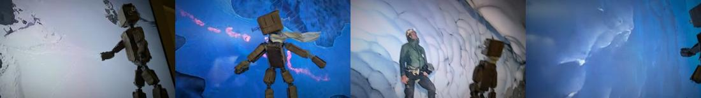
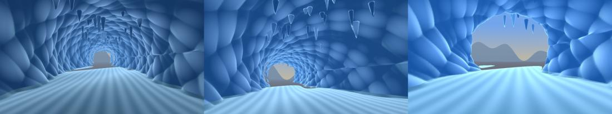
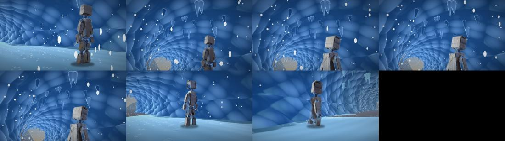
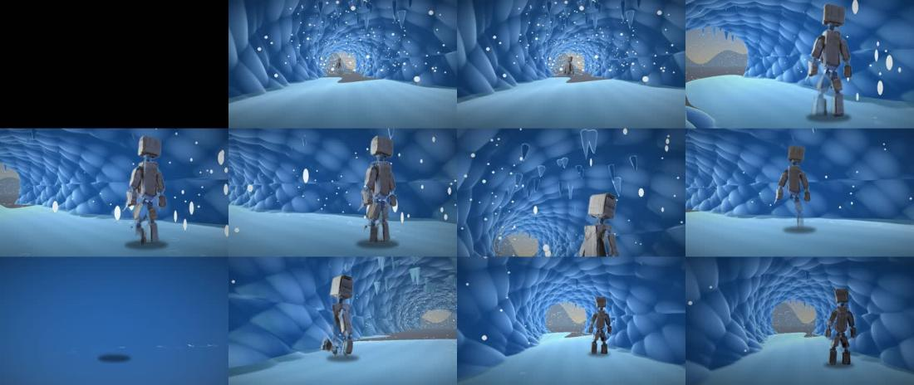

TSU-07 · case 8 of 11 · This Side Up
Tempus Fugit: ICE, ep. 1 "Thaw"
Can time that runs only near Boone be seen and heard?
Meltwater drops hang in the air. Near Boone they fall. 47 s.
How it was made
- Animatic from the TV-plate stills.
- Ray-march an ice cave in numpy.
- Give every drop its own clock.
- One drop lands on his head; he slips and spins.
- Sound from the same drop clocks.
What this case teaches
- A rule that runs in a radius is easy to see when hundreds of things obey it.
How it differs. v4 stopped the whole world. ICE stops all of it except a bubble around Boone.
Versions, in order
Every cut that was rendered, oldest first, with what changed from the one before. Videos are 640 px web encodes.
-
01
Animatic
Oct 18 14:44 · 0:31Wordless, from the TV-plate stills. The two stills with broadcast logos are left out.
-
02
Picture
Oct 18 16:32 · 0:23The episode picture before sound.
-
03
ICE ep. 1, "Thaw"
Oct 18 16:33 · 0:47With drips, plinks and the slide from the re-run drop clocks, and credits.
The sheets, step by step
Grouped by stage of the work, with the time each file was written. Click any sheet to see it full size; the arrow keys move through them.








What broke and what changed
- A Marble 2 ice cave was planned; the account returned no credits that day.The ray-marched cave. The Marble script checks for credits first and stops cleanly.
Read the record
Carried forward
A world that changes near Boone becomes the leaves in FALL.